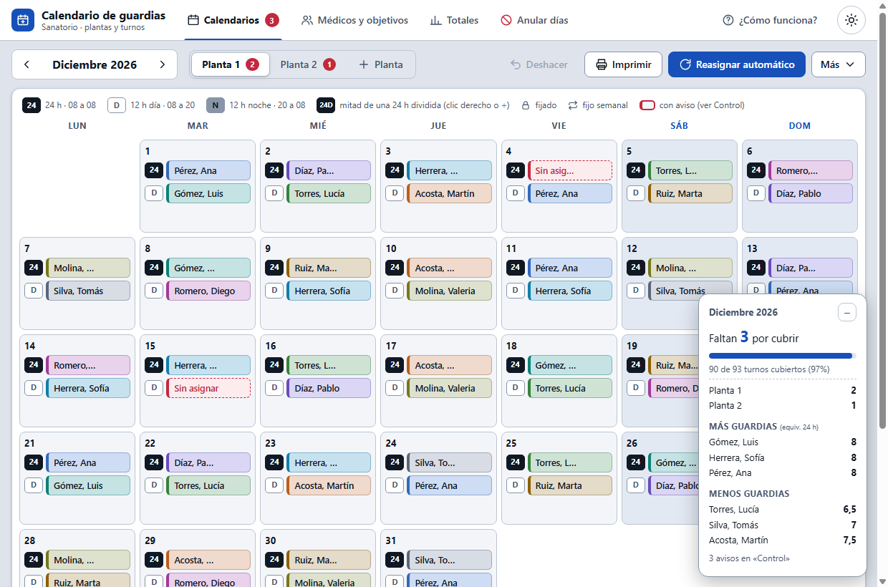
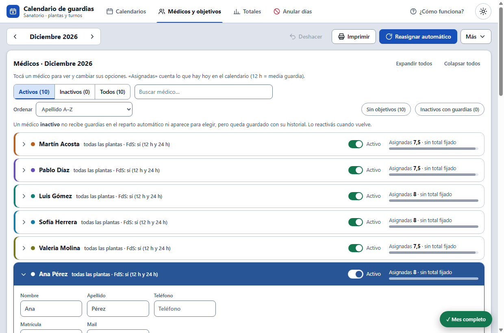
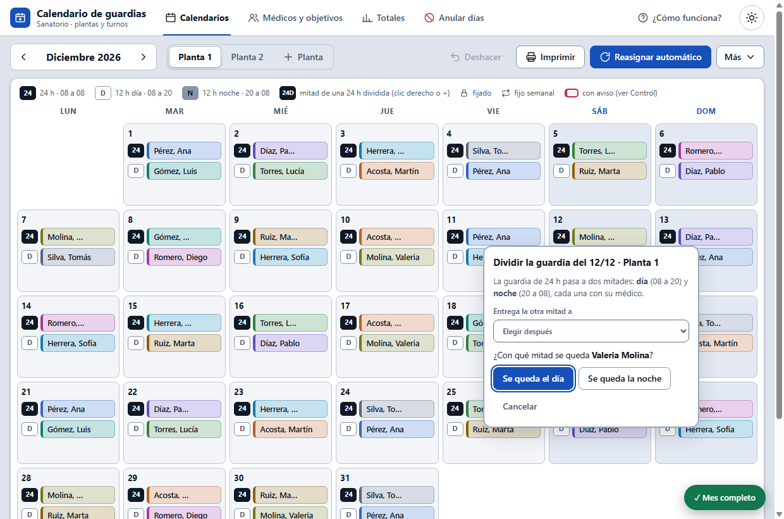
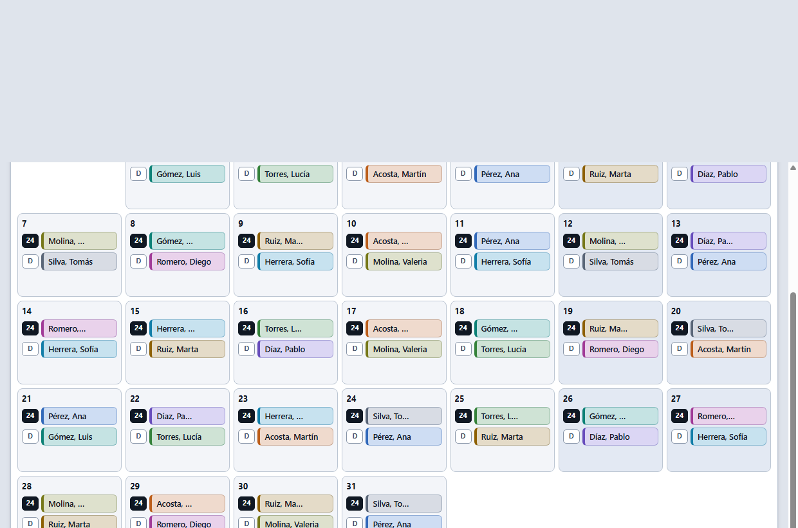
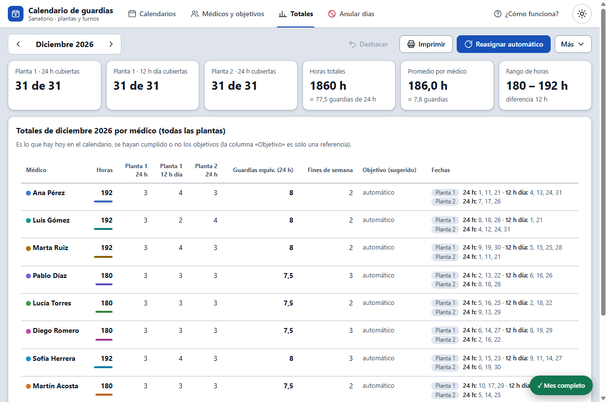
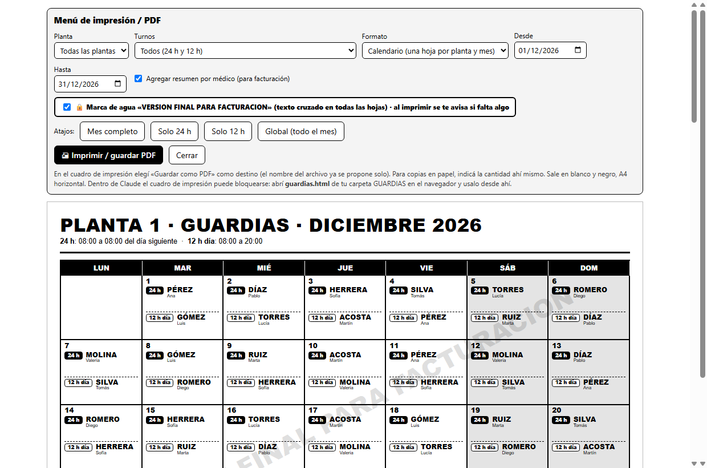
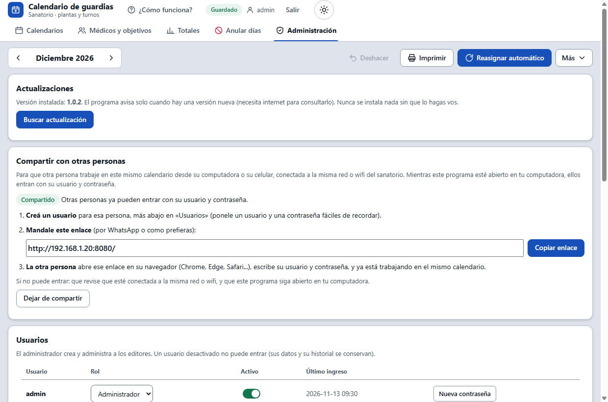

📅
Guía de uso
Calendario de guardias · cómo armar el mes y cerrarlo para facturación
La idea en 4 pasos: 1) cargás los médicos, 2) tocás Reasignar automático, 3) corregís lo que haga falta a mano, 4) imprimís el PDF para facturación. Todo se guarda solo, a cada cambio.
1. Conocer la pantalla

El calendario del mes, con el recordatorio a la derecha.
- Arriba: las pestañas Calendarios, Médicos y objetivos, Totales y Anular días. Con ‹ › cambiás de mes. Si hay varias plantas, cada una tiene su solapa (y podés agregar todas las que necesites con + Planta).
- Cada casillero es un día. 24 es la guardia de 24 h (de 8 a 8) y D la de 12 h de día. Cada médico tiene su color. Los turnos vacíos dicen «Sin asignar» en rojo.
- Recordatorio del mes (abajo a la derecha): cuántos turnos faltan por cubrir, quiénes tienen más y menos guardias y cuántos avisos hay. Con el botón – lo achicás; tocándolo de nuevo se abre.
- Deshacer: si te equivocás, tocá Deshacer y vuelve el cambio anterior.
2. Cargar los médicos

Pestaña «Médicos y objetivos»: cada médico tiene su ficha, que se abre al tocarla.
- Entrá a Médicos y objetivos. Abajo de la lista, en Agregar médico, escribí nombre, apellido (y si querés teléfono, matrícula y mail) y tocá agregar. También podés cargar varios juntos.
- Tocá la ficha de un médico para abrirla y completar: en qué plantas hace guardias (24 h, 12 h o ambas), fines de semana, días que no está (fijos de cada semana o fechas puntuales) y, si querés, cuántas guardias querés darle en el mes.
- Si un médico dejó de venir por un tiempo, apagá el interruptor Activo: queda guardado con su historial pero no recibe guardias nuevas. Cuando vuelve, lo prendés.
Dejar «auto» en la cantidad está bien: el programa reparte parejo entre todos.
3. Armar el mes
- Tocá Reasignar automático. El programa reparte las guardias de forma pareja y respetando los descansos (después de una de 24 h, 24 h libres; después de una de 12 h, 12 h) entre todas las plantas.
- Para cambiar un turno a mano: tocá el nombre en el casillero y elegí otro médico. Ese turno queda fijado con un candado y «Reasignar» ya no lo toca. Se puede cambiar cualquier turno, también uno en curso o ya pasado.
- Para intercambiar dos turnos: arrastrá la etiqueta 24 o D de un casillero y soltala sobre otro.
- Anular días: en la pestaña Anular días elegís planta y fechas en que no hay guardia (por ejemplo, un cierre). Esos días no llevan médico ni cuentan.
- Limpiar mes (menú Más) borra las guardias del mes para empezar de cero. Te pregunta antes y se puede deshacer. Si hay turnos fijados (con candado) podés tildar «Conservar los turnos fijados»: se borra todo lo demás y los fijados quedan como están.
4. Dividir una guardia entre dos médicos

Se abre al tocar el botón «÷» de un casillero, o con clic derecho sobre la guardia de 24 h.
- Clic derecho sobre la guardia de 24 h (o el botón ÷ que aparece sobre el casillero).
- Elegí con qué mitad se queda el médico: el día (de 8 a 20) o la noche (de 20 a 8), y a quién le entrega la otra mitad.
- Cada mitad cuenta como media guardia (12 h) para quien la toma. Para volver a una sola guardia, tocá el botón de juntar sobre la mitad.
5. Revisar: la sección «Control»

Abajo del calendario, «Control» avisa lo que falta o está mal.
- Dice qué pasa: turnos sin médico, un médico sin el descanso necesario, dos guardias que se pisan, etc.
- Si querés dejar algo así a propósito (una excepción), tildá la casilla del aviso y deja de contar como pendiente.
- Cuando todo está bien dice «Todo cubierto y con descanso respetado».
6. Totales: cuántas guardias lleva cada uno

Pestaña «Totales»: horas y guardias de cada médico en el mes.
- Muestra las horas y las guardias equivalentes a 24 h de cada médico (dos de 12 h = una guardia), los fines de semana y las fechas.
- Lo que figura acá es lo realmente cargado. La columna «Objetivo» es solo una referencia.
7. Cerrar el mes: PDF para facturación

Menú de impresión con la marca de agua «VERSION FINAL PARA FACTURACION» tildada.
- Revisá que no haya turnos sin médico ni avisos pendientes en Control.
- Tocá Imprimir. Elegí el período (por defecto, el mes), la planta y el formato (Calendario, o Global en lista).
- Dejá tildado «Agregar resumen por médico»: es la hoja con las guardias y horas de cada uno.
- Para el documento definitivo, tildá la marca de agua «VERSION FINAL PARA FACTURACION». Al imprimir, el programa te avisa cuántos turnos quedaron sin médico y te recuerda que, si después cambiás algo, hay que emitir un PDF nuevo.
- Tocá Imprimir / guardar PDF y en el cuadro de Windows elegí «Guardar como PDF» como destino. El nombre ya viene puesto.
«Solo 24 h» y «Solo 12 h»: la mitad de una guardia dividida se factura como guardia de 12 h, así que aparece en «Solo 12 h» y en «Todos». Si imprimís «Solo 24 h», el PDF avisa cuántas mitades quedaron afuera.
8. Que otras personas trabajen en el mismo calendario

Pestaña «Administración» (solo para el administrador).
- Entrá a Administración y tocá Permitir que otras personas entren. Si Windows muestra un aviso del firewall, elegí «Permitir acceso» (puede hacerlo solo alguien con permisos en la computadora).
- Más abajo, en Usuarios, creá un usuario para esa persona (usuario y contraseña de al menos 8 caracteres). Puede ser Editor o Administrador.
- Tocá Copiar enlace y mandáselo por WhatsApp junto con su usuario y contraseña.
- Esa persona abre el enlace en su navegador (Chrome, Edge, Safari…), escribe su usuario y contraseña y ya trabaja en el mismo calendario.
- Tiene que estar conectada a la misma red o wifi y este programa tiene que estar abierto en tu computadora.
- Si dos personas cambian lo mismo a la vez, el programa avisa y deja elegir qué guardar. Nada se pierde: queda en el Historial de versiones.
- Para dejar de compartir, tocá Dejar de compartir.
- Esto sirve cuando están en la misma red. Si cada una trabaja desde su casa, usá el Grupo (sección siguiente). Las dos opciones no se usan a la vez.
9. Trabajar en grupo, cada una desde su casa
Cada persona usa su propio programa, en su computadora, y los cambios se pasan solos entre todas (hasta 5 personas). Los datos viajan cifrados: nadie ajeno puede leerlos.
- La administradora del grupo (la primera persona) pega una vez el código de invitación que le mandó quien instaló el programa: Administración → Grupo → Unirme al grupo. Su calendario pasa a ser el del grupo.
- Para sumar a otra persona, la administradora toca Invitar a una persona y Copiar invitación, y se la manda por WhatsApp. Vale 48 horas y se usa una sola vez.
- La otra persona la pega en Administración → Grupo → Unirme al grupo y acepta. El calendario de su computadora se reemplaza por el del grupo (antes se guarda una copia de seguridad).
- Arriba, junto a «Guardado», aparece «Al día con el grupo». Los cambios llegan a las demás en unos segundos.
- Sin internet: seguí trabajando. Dice «Sin conexión con el grupo» y, cuando vuelve la conexión, todo se pasa solo.
- Si dos personas cambian el mismo turno a la vez, queda lo último que llegó y el programa lo avisa. Si no era lo que querías, cambialo de nuevo.
- Deshacer se vacía cuando llegan cambios de otra persona.
- Para sacar a alguien, la administradora toca Sacar del grupo en la lista de personas. Pierde el acceso al instante.
- Para salir vos, tocá Salir del grupo: tu calendario queda como está y deja de sincronizar.
- Mientras estés en un grupo, no se puede borrar todo, cargar un archivo ni volver a una versión anterior, porque dejaría vacío el calendario de todas. Si lo necesitás de verdad, primero salí del grupo.
- El PDF «VERSION FINAL» sale con lo que tenga tu computadora: antes de emitirlo, avisale a las demás por WhatsApp y esperá a que arriba diga «Al día con el grupo».
10. Copias de seguridad y problemas
- Copia automática: el programa guarda una copia por día. Además, en Administración podés Hacer una copia ahora y exportar el calendario o toda la base.
- Volver atrás: en Administración → Historial de versiones podés volver a cualquier versión anterior; no se borra nada.
- Borrar datos (solo administrador, pide tu contraseña): permite vaciar las guardias, o dejar todo en cero. Antes hace una copia.
- Versión nueva del programa: cuando hay una, el administrador ve una barra azul arriba con las novedades y el botón «Ver cómo actualizar». También podés tocar Buscar actualización en Administración. Hace falta internet para consultarlo; el programa nunca se actualiza solo.
- Contraseña olvidada: el administrador crea una nueva para ese usuario (Nueva contraseña en la lista de usuarios). Si se olvida la del único administrador, no se puede recuperar.
- Si el programa no abre, cerralo y volvé a abrirlo; si sigue, reiniciá la computadora. Mirá la «Guía de instalación» o consultá a quien te lo instaló.
Esta guía siempre a mano: está instalada con el programa. La abrís desde ¿Cómo funciona? (arriba, en el programa) o desde el Menú Inicio → Calendario de guardias → Guía de uso.